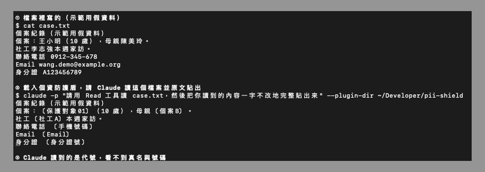

這篇在講什麼
用 AI 整理個案紀錄很省時間，可是個資一旦送上雲端就收不回來。這篇介紹我做的免費小工具「個資防護盾」，它是一個 Claude Code Mod，會在 AI 讀到資料之前，先在你自己的電腦上把人名、身分證號、手機、Email 換成代號。你會看到它實際把資料變成什麼樣子、怎麼安裝，以及它做不到的地方。
- 在 NPO、社福單位寫個案紀錄、輔導紀錄，想用 AI 幫忙整理，又不敢把服務對象的名字貼給 AI
- 單位沒有預算買 ERP 系統，也沒錢買一台跑本地 AI 的電腦
- 服務家暴被害人、兒少保護個案這類身分不能曝光的對象，或是要幫這類單位導入 AI 的顧問
- 一個免費、原始碼公開的 Claude Code Mod，終端機版與桌面 App 都能裝
- 一個用假資料做的前後對照，看懂開啟防護盾後 AI 讀到的是什麼
- 一份上線前的五項檢查清單，判斷自己的單位能不能用、要先補什麼
企業有 ERP 擋著，NPO 的個案資料只能手動填表
我有幫一些組織導入 AI，企業組織有，NPO 也有。
企業通常有錢買比較完整的 ERP 系統，個資原本就管理得很好，比較不用擔心。
NPO 多半沒有這筆預算，沒辦法搭建完整的 ERP 系統，以前就是自己手動填表單。現在如果要用 AI，就會碰到個資上網的問題。
他們在做案例跟輔導，又不能不上網，也不會有錢去買企業等級的電腦跑本地 AI。這以前一直是很麻煩的事。
家暴與兒少個案的身分資訊，法律有直接規定
這些 NPO 幫助的是弱勢群體，服務對象的個資本來就敏感。有一些特殊的服務個案，像被家暴的婦女或兒少，法律對他們的身分資訊有直接規定：
- 《家庭暴力防治法》第 50 條之 1：媒體不得報導或記載被害人及其未成年子女的姓名或可識別身分的資訊。
- 《兒童及少年福利與權益保障法》第 66 條第 2 項：從事兒少保護、安置、訪視、調查、輔導的人員，對職務上知道的秘密與隱私要保密，沒有正當理由不得洩漏或公開，違反可罰 2 萬到 10 萬元。
- 同法第 69 條：任何人都不得以媒體、資訊或其他公示方式揭示特定兒少的身分資訊。
- 一般個案資料則受《個人資料保護法》規範。
條文原文可以在家庭暴力防治法、兒童及少年福利與權益保障法、個人資料保護法的全國法規資料庫頁面查到。
以前要先買一台地端電腦去識別化，現在這一步搬進 Claude Code
過去要讓 AI 安全地處理這類資料，常見的做法是先有一台放在單位裡的電腦，在本機把隱私處理掉，再把處理過的內容交給雲端 AI。對 NPO 來說，這台電腦和維護它的人力都是成本。
Claude Code 在 2026 年 10 月 1 日的 v2.1.287 開放了 Mods。Mod 是一小段在 Claude Code 程式內部執行的程式，可以在 AI 讀到資料之前，先把資料改寫一次。
所以我做了個資防護盾，把「先在本機把隱私處理掉」這一步直接內建在防護盾裡。
開啟防護盾前後，AI 讀到的個案紀錄差在哪
下面三筆個案紀錄全部是假資料，名字、電話、Email、身分證號都是編的。點上面的個案切換，再點「開啟防護盾」看 AI 讀到的版本。
這個示範用的名單 names.txt
王小明 林佳慧 張家豪 陳美玲=個案B 李志強=社工A
上面是網頁模擬。下面是實際執行的畫面：用同一份假名單和假個案檔，在 Claude Code 載入個資防護盾，請 Claude 讀檔後原文貼出，它回報的內容全是代號。

AI 照樣可以幫你整理段落、摘要重點、改寫成報告，只是它看不到是誰。
防護盾預設不會把代號換回真名，所以 AI 寫出來的檔案保留代號，適合產出給外部單位的去識別化報告。如果要讓 AI 修改含真名的原始檔案，輸入 /pii-shield restore on，它只會在本機寫檔的那一刻把代號換回真名，不會把真名帶進指令、網路或其他工具。
防護盾在哪些地方換代號，哪些地方擋不住
| 資料從哪裡來 | 防護盾怎麼處理 |
|---|---|
| 你在對話框打的字 | 換成代號 |
| AI 讀的文字檔、指令輸出、網頁內容 | 換成代號 |
| CLAUDE.md、記憶檔、對話壓縮後的摘要 | 換成代號 |
| AI 用 Read 工具讀圖片和 PDF | 直接擋掉，請先轉成文字檔；轉出來的文字會照常換代號 |
| 找不到名單、名單是空的，或格式有錯 | 停止送出，所有文字內容都不給 AI，直到你修好名單 |
| 你直接貼進對話框的圖片 | 擋不住 |
| 開啟防護盾之前的對話 | 不會補遮 |
防護盾本身只讀一個檔案，也就是你的名單。它不連網，也不執行其他程式。這件事可以用 Claude Code 內建的 claude plugin validate 指令自己驗證，輸出會列出它用到的每一個功能。
程式請另一家公司的 AI（OpenAI Codex）做了三輪資安審查。第一輪指出 12 項問題，最嚴重的是「換回真名的功能原本對所有工具都生效」，AI 呼叫網路工具時可能把真名帶出去，已改成預設關閉、只限本機寫檔。第二輪指出空白名單會放行，已改成停止送出。第三輪判定遮蔽核心已修好，但總評仍是需要修正，剩下的是同時開好幾個對話時設定會共用，目前寫在限制說明裡，還沒改程式。每一輪的意見與處理方式都公開在 GitHub 的審查紀錄。
目前通過的是 13 項自動測試與三輪審查，還沒有在真實個案上長期使用過。
名單沒列到的寫法它認不出來，上線前要知道的限制
- 只認得名單上的寫法。名單寫「王小明」，「王先生」「小明哥」「阿明」都不會被遮，要全部列進名單。上面個案三的「小豪」就是例子。
- 間接線索遮不到。學校、地址、市話、親屬關係、事件細節組合起來，仍然可能認出是誰。
- 號碼只認常見格式，身分證號、手機、Email 換成代號之後換不回來。
- 名單裡的名字太短會誤傷。名單有「明」，所有「明」字都會被換掉。
- 防護盾管的是 AI 讀到什麼，不管 AI 執行什麼指令。請搭配 Claude Code 的權限設定，禁止 AI 執行連網指令。
- 你在畫面上看到的 AI 回覆會是代號，要自己對照名單。
- 處理保護性個案時建議只開一個對話，同時開好幾個對話時設定可能共用。
單位上線前的五項檢查
- 用假資料先跑一次，確認 AI 讀到的真的是代號
- 把每位個案的本名、小名、稱謂、常見錯字都列進名單
- 名單只放在單位電腦本機，不放雲端硬碟、不用通訊軟體或 Email 傳
- 要給外部看的報告，保持寫回真名關閉（預設就是關閉）
- 照單位自己的個資規範評估，必要時請督導或法務一起看
下載安裝個資防護盾，終端機與桌面 App 都能用
需要 Claude Code v2.1.287 以上。終端機版與 Claude 桌面 App 的 Code 分頁都能用。
如果單位裡沒有人用過 Claude Code，可以把這篇文章和 GitHub 連結交給負責電腦的同事或協助導入的顧問，請他照下面的步驟裝好，再用假資料示範給大家看。
桌面 App 或終端機：用外掛市集安裝
在 Claude Code 對話框輸入：
裝好後，輸入 /config 打開設定選單，找到 pii-shield 的 Names file，填入名單檔在你電腦上的完整路徑。名單格式是一行一個名字，要指定代號就寫「真名=代號」。沒有設定名單之前，防護盾會停止送出所有文字內容。
終端機：下載原始碼直接載入
狀態列出現「個資防護盾：保護 N 個名字」，就是開啟了。
免費、MIT 授權。完整說明、做不到的事、測試與審查紀錄都在 GitHub。
- 公司資料可以貼給 AI 嗎？｜先搞清楚這兩條紅線：還沒用工具之前，先判斷哪些資料根本不該給 AI
- 可以讓 AI 大量處理個資，又不讓它讀到內容嗎？：另一種做法，AI 只看欄位名稱，資料交給程式搬
統整
NPO 沒有 ERP，也沒有預算買地端電腦，卻要處理法律保護最嚴的個案資料。個資防護盾把「先在本機去識別化」這一步內建在 Claude Code 裡：名單上的名字和常見號碼，在 AI 讀到之前就換成代號；找不到名單就停止送出；換回真名預設關閉，打開也只在本機寫檔時作用。
它降低的是送出去的風險，名單沒列到的寫法和間接線索仍要人把關。先用假資料試一次，再決定你的單位要怎麼用。
想一起把 AI 用得安心
我每月固定舉辦兩場免費線上講座，分享實戰經驗與方法論。場次會先在 LINE 社群公布，想持續學習，或是有陪跑、顧問需求，都歡迎先從社群開始。
主要討論：善用 AI 作為思考夥伴、把知識和經驗整理成提示詞、技能包、知識庫。